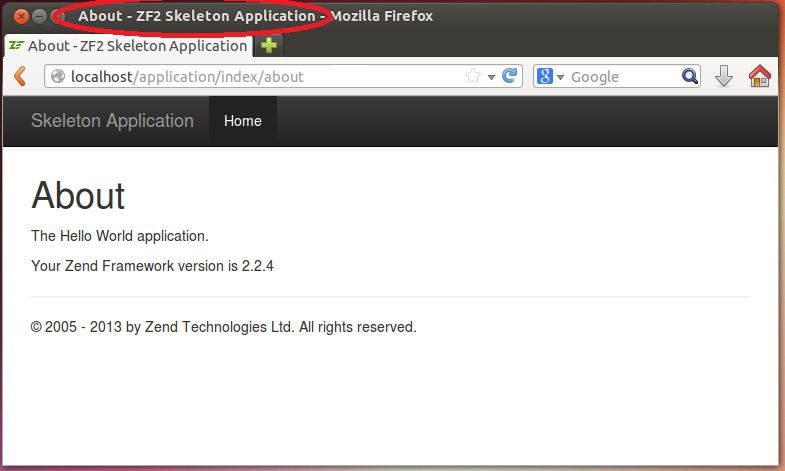

4.13. Помощники представления
Помощник представления - это обычно простой (относительно) PHP-класс, целью которого является обработка некоторой части представления. Вы можете вызвать помощники представления из любого шаблона представления. С этими помощниками, вы можете создавать виджеты (такие как меню, панели навигации и др.) для ваших веб-страниц.
Помощники представлений аналогичны плагинам контроллеров: плагины позволяют "расширять" функциональность контроллеров, а помощники представления позволяют "расширять" функциональность шаблонов представлений.
ZF3 содержит множество стандартных помощников представления. В таблице 4.7 представлены некоторые из них с кратким описанием:
| Standard Plugin Class | Description |
|---|---|
BasePath |
Позволяет извлечь базовый путь к веб-приложению, который является абсолютным путем к APP_DIR. |
Url |
Позволяет сгенерировать абсолютный или относительный URL-адрес изнутри шаблонов представления. |
ServerUrl |
Извлекает URL текущего запроса. |
Doctype |
Помощник для установки и извлечения тэга DOCTYPE веб-страницы. |
PageTitle |
Помощник для установки названия веб-страницы. |
HtmlList |
Помощник для генерации нумерованных и нененумерованных HTML-списков. |
ViewModel |
Помощник для хранения и извлечения модели представления. |
Layout |
Извлекает шаблон представления лэйаута. |
Partial |
Позволяет обработать "частичный" шаблон представления. |
InlineScript |
Помощник для установки и извлечения элементов скрипта для включения в тело HTML. |
Identity |
Помощник для извлечения личности авторизированного пользователя. |
FlashMessenger |
Позволяет извлечь "flash"-сообщения, хранящиеся в сессии. |
EscapeHtml |
Позволяет вынести переменную, выведенную на веб-страницу. |
Чтобы продемонстрировать использование помощника представления, ниже мы покажем, как установить название веб-страницы.
Обычно, каждой веб-странице необходимо давать свое название. Вы можете сделать это с помощью помощника
представления HeadTitle. Например, вы можете установить название для страницы About, добавив
следующий PHP-код в начало шаблона представления about.phtml:
<?php
$this->headTitle('About');
?>
В данном куске кода мы вызываем помощник представления HeadTitle и передаем ему строку с названием страницы ("About")
как аргумент. Помощник представления HeadTitle устанавливает элемент <title> вашей веб-страницы.
Затем, если вы откроете страницу About в вашем браузере, название страницы будет выглядеть
как "About - ZF Skeleton Application" (см. рисунок 4.9. ниже):
 Рисунок 4.9. Установка названия для страницы About
Мы обсудим помощники представления более детально и дадим больше полезных примеров в разделе Внешний вид страницы и лэйаут.